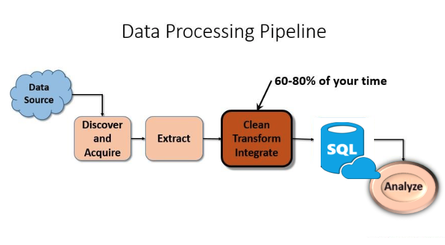

The image below illustrates our process for data cleaning.
We sourced the data from the NYC Open Source website and saved it as a CSV file. The data cleaning process commenced with the importation of the CSV file as a Pandas DataFrame.
Following these modifications, we transferred the cleansed DataFrame into three formats: CSV, JSON, and SQLite, to meet specific application requirements.